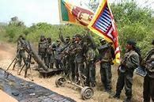
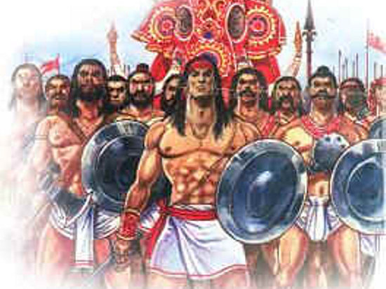

OUR HISTORY
Tarry Not Forward
Click Play Button to Play the Video
The history of the Sri Lanka Army dates back to 1881. A Volunteer organization that was formed as the Citizens Rifle Association was re-designated as the Ceylon [Vol] Infantry Regiment by a Gazette notification on 1 April 1881. Lieut. Colonel John Scott Armitage was appointed as the first commanding officer of this fledgling Volunteer Unit. Later, in order to encourage the concept of Volunteering, the Volunteer Force was expanded to include Units at District level. Accordingly, two Volunteer Detachments were set up in Galle and Matara in the old Dutch Forts. By the year 1910, the Army had expanded to include Regiments of the Ceylon Infantry, Ceylon Artillery, Ceylon Mounted Rifles, Ceylon Planters Rifles, Ceylon Service Corps and the Ceylon Medical Corps. Thereafter, the Ceylon Defence Force was established under Army Order No: 08 of 1910, to cater to the administration and discipline of these regiments, and came under the direct purview of the Commandant, Ceylon Defence Force. During the first World War (1914 to 1918), the Ceylon Defence Force was engaged in active service and the troops deployed in Galle and Matara too were mobilized. The Ceylon Defence Force [CDF] saw action once again during World War II [1939 to 1945]. After the War, the CDF was systematically “Ceylonised” by the appointment of Ceylonese Officers as commanding officers of Battalions. After Ceylon regained Independence in 1948 the CDF was re-designated as The Ceylon Volunteer Force and the first Ceylon [Vol] Light Infantry Battalion was established. The Detachments in Galle and Matara were renamed as “B” Company of the Ceylon [Volunteer] Light Infantry. With the adoption of the Army Act passed in Parliament on 10 October 1949, The Ceylon Army was formed through a special Gazette notification. The Politico-Military hierarchy decided to form Regular Infantry Battalions and the Volunteer Force was mobilized during national emergencies. With the abrogation of the Defence Pact with Great Britain, British troops were gradually phased out. The first Regular Infantry Battalion, the 1st Battalion of the Ceylon Light Infantry came into existence on 12 May 1950. The Ceylon [Volunteer] Light Infantry was renamed as the 2nd [Volunteer] Battalion of the Light Infantry on the same day. “B” Company in Galle and Matara was renamed as the Ruhuna Volunteer Regiment in 1950. The first commanding officer was the late Colonel C.A. Dharmapala. In 1956, with the change in the national political leadership to the Sri Lanka Freedom Party, the Ruhuna Regiment did not find favour with the political hierarchy and was disbanded. Subsequently, in October 1956, the second Regular Infantry Battalion, the 1st Battalion of the Sinha Regiment was established in the Imperial Camp in Diyatalawa. Thereafter, the 2nd [Volunteer] Battalion of the Sinha Regiment was raised in Kandy. When the Ruhuna Regiment was disbanded, the troops located in Galle and Matara were attached to various Units. Subsequently, the troops that were deployed in Galle formed the “C” Company of the 2nd [Vol] Battalion of the Sinha Regiment. In the latter half of 1959, 110 soldiers deployed as “C” Company of the 2nd [Vol] Battalion, Sinha Regiment under the command of Capt. D.S. Amarasuriya were brought together to form a new Volunteer Unit called the Gemunu Regiment, which was raised in Galle on 23 November 1959. Capt. D.S. Amarasuriya was appointed the commanding officer. The new Unit did not have a flag or cap badge, therefore, it was originally proposed to have the image of a Leopard associated with the Yala Sanctuary with cross rifles designed for the cap badge. However, it was not adopted. As the Permanent Staff of the Unit was drawn from the Sinha Regiment, they followed the traditions associated with the Sinha Regiment. The third Regular Infantry Regiment, the 1st Battalion of the Gemunu Watch, was raised at the Ceylon Volunteer Force [CVF] Camp in Diyatalawa on 7 December 1962 and subsequently occupied the Rangala Camp of the Ceylon Navy and the Imperial Camp vacated by the Sinha Regiment (which had been moved to Colombo). As Gemunu originated in Ruhuna, the Volunteer Gemunu Regiment established in Galle and the Detachment located in Matara were renamed Gemunu Battalions, and formed the Volunteer counterparts of the 1st Battalion of the Gemunu Watch. The Founding Father and first commanding officer of the 1st Battalion of the Gemunu Watch, Lieut. Colonel J.F. Halangode was from the 1st Battalion of the Ceylon Light Infantry. He was inspired by the traditions of the British Regiment, the Black Watch, and inculcated those norms and customs into the 1st Battalion of the Gemunu Watch [1GW]. The nucleus of 1GW consisted of Officers and Other Rank Cadres drawn from the Regular Units already established. The name “Gemunu” was considered for the new Unit because of the inspiration drawn from the achievements of the Great Warrior King of Lanka from Ruhuna, King Dutugemunu.
In Action
Respect
The Great King Gemunu
HOW TO FIND US
The Google Map